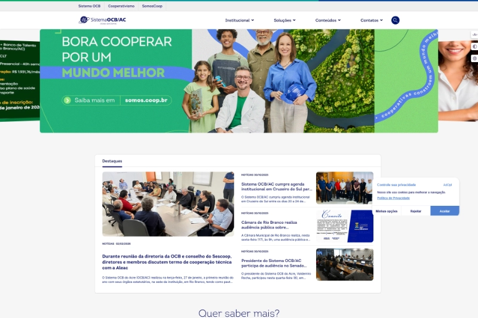

Portal institucional nacional — migração Laravel → Joomla (J4 → J5)
SomosCooperativismo — Portal do cooperativismo nacional
Implementação, migração e evolução do portal institucional do cooperativismo nacional.
Contexto: Portal público • ProduçãoEntregas: instalação Joomla, migração de conteúdo, atualização J4→J5 e modernizaçãoTecnologias: Joomla 4/5, PHP, jQuery, Bootstrap, Helix, SP Page Builder, Component CreatorStatus: Ativo em produção
Portal institucional nacional — Joomla 5
Somos.coop — Portal institucional do cooperativismo
Atuação em migração, manutenção e evolução do portal, com foco em escalabilidade, padronização visual e sustentação contínua.
Contexto: Institucional • ProduçãoPlataforma: Joomla 5Entregas: migração, manutenção evolutiva, extensões sob demanda e suporteStatus: Ativo em produção
Portal de inovação — Joomla 5 • Conteúdo • Experiência digital
InovaCoop — Portal de inovação no cooperativismo
Sustentação técnica, evolução de layout e apoio à estrutura e organização de conteúdo.
Contexto: Portal público • ProduçãoPlataforma: Joomla 5Entregas: sustentação, melhorias estruturais, ajustes de layout e conteúdoStatus: Ativo em produção
Central da Marca — catálogo • login • downloads
Central da Marca — Plataforma de materiais institucionais
Evolução e sustentação da plataforma de materiais oficiais, com foco em organização do catálogo e fluxo de disponibilização.
Contexto: Plataforma de serviços • ProduçãoEntregas: melhorias de usabilidade, organização do catálogo e fluxo de acessoTecnologias: Joomla, PHP, jQuery, Bootstrap, Helix, SP Page BuilderStatus: Ativo em produção
Portal de autenticação unificada (SSO) • Joomla 5 • Keycloak • Integração via API
Acesso.coop.br — Portal de acessos (SSO)
Plataforma central de autenticação dos sistemas internos do Sistema OCB, permitindo acesso integrado com a mesma identidade digital.
Contexto: Portal/Sistema interno de autenticação • ProduçãoPlataforma: Joomla 5Entregas: base de usuários e integração de loginsIntegrações: Keycloak (SSO) • conexão via APIStatus: Ativo em produção

Portal estadual • Joomla 4 • Migração planejada para Joomla 5
SomosCooperativismo AC — Portal estadual
Portal estadual em produção seguindo o padrão do ecossistema SomosCooperativismo.
UF: ACPlataforma: Joomla 4Status: Em produção • migração planejada para Joomla 5
SomosCooperativismo AL — Portal estadual
Portal estadual em produção seguindo o padrão do ecossistema SomosCooperativismo.
UF: ALPlataforma: Joomla 4Status: Em produção • migração planejada para Joomla 5
SomosCooperativismo AM — Portal estadual
Portal estadual em produção seguindo o padrão do ecossistema SomosCooperativismo.
UF: AMPlataforma: Joomla 4Status: Em produção • migração planejada para Joomla 5
SomosCooperativismo BA — Portal estadual
Portal estadual em produção seguindo o padrão do ecossistema SomosCooperativismo.
UF: BAPlataforma: Joomla 4Status: Em produção • migração planejada para Joomla 5
SomosCooperativismo CE — Portal estadual
Portal estadual em produção seguindo o padrão do ecossistema SomosCooperativismo.
UF: CEPlataforma: Joomla 4Status: Em produção • migração planejada para Joomla 5
SomosCooperativismo DF — Portal estadual
Portal estadual em produção seguindo o padrão do ecossistema SomosCooperativismo.
UF: DFPlataforma: Joomla 4Status: Em produção • migração planejada para Joomla 5
SomosCooperativismo MA — Portal estadual
Portal estadual em produção seguindo o padrão do ecossistema SomosCooperativismo.
UF: MAPlataforma: Joomla 4Status: Em produção • migração planejada para Joomla 5
SomosCooperativismo MS — Portal estadual
Portal estadual em produção seguindo o padrão do ecossistema SomosCooperativismo.
UF: MSPlataforma: Joomla 5Status: Em produção • migrado e atualizado
SomosCooperativismo MT — Portal estadual
Portal estadual em produção seguindo o padrão do ecossistema SomosCooperativismo.
UF: MTPlataforma: Joomla 4Status: Em produção • migração planejada para Joomla 5
SomosCooperativismo PA — Portal estadual
Portal estadual em produção seguindo o padrão do ecossistema SomosCooperativismo.
UF: PAPlataforma: Joomla 5Status: Em produção • migrado e atualizado
SomosCooperativismo PE — Portal estadual
Portal estadual em produção seguindo o padrão do ecossistema SomosCooperativismo.
UF: PEPlataforma: Joomla 4Status: Em produção • migração planejada para Joomla 5
SomosCooperativismo PR — Portal estadual
Portal estadual em produção seguindo o padrão do ecossistema SomosCooperativismo.
UF: PRPlataforma: Joomla 4Status: Em produção • migração planejada para Joomla 5
SomosCooperativismo RN — Portal estadual
Portal estadual em produção seguindo o padrão do ecossistema SomosCooperativismo.
UF: RNPlataforma: Joomla 4Status: Em produção • migração planejada para Joomla 5
SomosCooperativismo RS — Portal estadual
Portal estadual em produção seguindo o padrão do ecossistema SomosCooperativismo.
UF: RSPlataforma: Joomla 4Status: Em produção • migração planejada para Joomla 5
SomosCooperativismo SC — Portal estadual
Portal estadual em produção seguindo o padrão do ecossistema SomosCooperativismo.
UF: SCPlataforma: Joomla 5Status: Em produção • migrado e atualizado
SomosCooperativismo SE — Portal estadual
Portal estadual em produção seguindo o padrão do ecossistema SomosCooperativismo.
UF: SEPlataforma: Joomla 5Status: Em produção • migrado e atualizado
SomosCooperativismo TO — Portal estadual
Portal estadual em produção seguindo o padrão do ecossistema SomosCooperativismo.
UF: TOPlataforma: Joomla 4Status: Em produção • migração planejada para Joomla 5